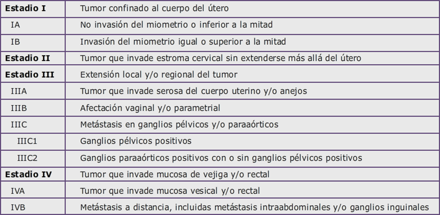

Cáncer de Endometrio

2.6 Diagnóstico
Manifestaciones clínicas
El síntoma más frecuente del CE es el sangrado vaginal anormal o metrorragia, fundamentalmente en una mujer peri o postmenopáusica. El 90% de las pacientes debuta con este síntoma. Sin embargo, hay que tener en cuenta que de entre los muchos procesos que cursan con metrorragia en la postmenopausia sólo entre el 3% y el 20% de los casos tendrán como causa el CE, aunque otro 5-15% serán debidas a una hiperplasia. De ahí la necesidad de desarrollar un método sensible para el diagnóstico precoz. El error más frecuente en el manejo de estas mujeres es pensar que el sangrado es debido a un tratamiento estrogénico o a una vaginitis, o bien que ese sangrado no es un síntoma de suficiente entidad para poner en marcha los protocolos de diagnóstico de CE.
En la mujer premenopáusica el signo de más frecuente de sospecha será el sangrado uterino persistente en mujeres con factores de riesgo (obesidad, anovolución crónica, etc). La leucorrea y la mucorrea son síntomas mucho menos frecuentes, que pueden estar presentes en el 3% de las pacientes.
Excepcionalmente (1-5%) se detecta en fase asintomática o por presencia de metástasis.
Ocasionalmente la sospecha diagnóstica puede producirse ante la aparición de ciertos hallazgos en la citología vaginal rutinaria de screening del cáncer de cérvix: células glandulares atípicas, células endometriales o adenocarcinoma.
Importante: La metrorragia es el primer síntoma en casi todas las pacientes con CE, lo que permite que la mayoría de estos tumores se diagnostiquen en un estadio I.
Diagnóstico
En primer lugar, hay que realizar una exploración física, para confirmar que el sangrado tiene un origen uterino, evaluar el tamaño y movilidad del útero, así como para detectar posibles masas pélvicas, aunque las pacientes con estadios iniciales de cáncer de endometrio no suelen presentar aumento de tamaño uterino. Se ha de realizar una palpación de las áreas ganglionares, con especial importancia en las áreas inguinales.
La ecografía ginecológica suele ser la primera prueba de imagen que se realiza. En mujeres postmenopáusicas se analizará si existe o no engrosamiento endometrial; un grosor endometrial mayor de 4 mm es una indicación de biopsia endometrial, mientras que ésta podría diferirse en aquellos casos con un grosor endometrial menor. En mujeres premenopáusicas el grosor endometrial no debe considerarse para establecer la indicación de biopsia.
El diagnóstico se realizará con la obtención de tejido endometrial para su estudio histológico. La toma directa de células endometriales se puede hacer por diversos métodos, incluso de forma ambulatoria, mediante lavado, aspirado o cepillado, pero la precisión del método oscila entre un 60- 80%. El método ideal para el diagnóstico del cáncer de endometrio es la histeroscopia y el legrado fraccionado, aunque actualmente suele utilizarse el Doble Aspirado Biopsia Endometrial (DABE) con resultados similares al legrado fraccionado.
La histeroscopia permite la visualización tanto del canal endometrial como de la cavidad uterina y, al mismo tiempo, nos permite obtener la biopsia selectiva de la lesión sospechosa, si la hubiera. Por otro lado, la visualización completa de la cavidad uterina nos puede informar acerca del estadio y factores pronósticos. Hay mayor porcentaje de metástasis ganglionares en tumores mayores de 2 cm. En caso de afectación de toda la cavidad (35% de los casos) podemos precisar si hay o no afectación endocervical (lo que supondría ya un estadio II).
Estadificación
El sistema de estadificación más utilizado es el de la FIGO (siguiente tabla), que a diferencia del cáncer de cérvix se basa en datos quirúrgicos. Sin embargo, la valoración preoperatoria es fundamental tanto para conocer la extensión de la enfermedad como para valorar el estado general de la paciente, teniendo en cuenta la edad media en la que se desarrolla esta neoplasia y la patología asociada que generalmente tiene (obesidad, hipertensión arterial, cardiopatías, etc.).
Las exploraciones que se realizan habitualmente tras el diagnóstico de CE para una evaluación preoperatoria adecuada son las siguientes:
Análisis de sangre: No hay evidencia de la utilidad clínica de ningún marcador tumoral. Aún así, el marcador CA 125 se realiza con frecuencia en muchos centros, ya que si estuviera elevado podría ser útil para el seguimiento.
RM pélvica: predice con una precisión de un 80% la invasión miometrial, además de dar información complementaria de otras estructuras pélvicas. La indicación de la RM no está completamente definida. Suele realizarse en caso de subtipos histológicos de alto riesgo o endometrioides de alto grado, pero es controvertida su indicación en tumores inicialmente considerados de bajo riesgo.
RX tórax.
TC de tórax, abdomen y pelvis. Sólo suele realizarse en los casos de alto riesgo, bien por subtipo histológico o por ser localmente avanzado en las exploraciones previas.
PET-TC: resulta útil para la detección de enfermedad ganglionar y metastasis a distancia, donde se muestra superior a cualquier otra técnica de diagnóstico por la imagen, pero no suele realizarse de manera rutinaria en el CE. Tan sólo se plantea en determinados casos de muy alto riesgo o hallazgos dudosos en RM y/o TC.
Estadificación del cáncer de endometrio según la FIGO.